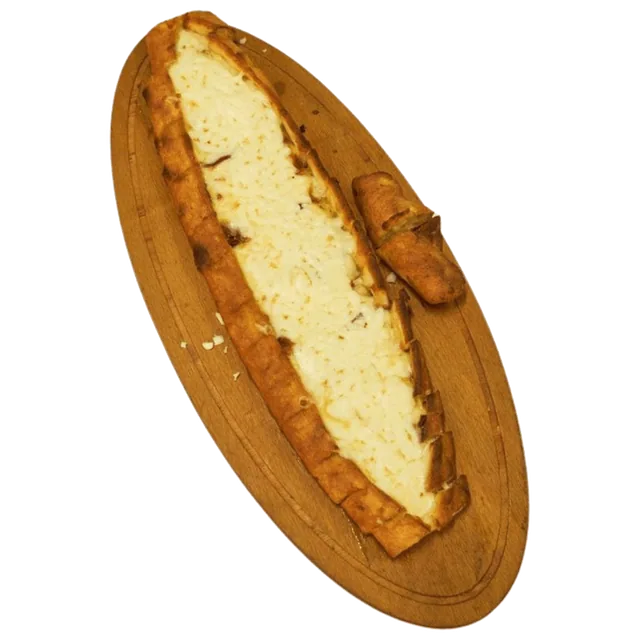
Kaşarlı Pide (Açık)
350 TL
Ortaköy'de Karadeniz pidesi ve lahmacun
Odun ateşinde, el yapımı. Hepsi maydanoz ve limonla gelir.

350 TL
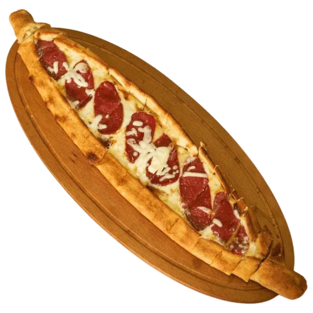
420 TL
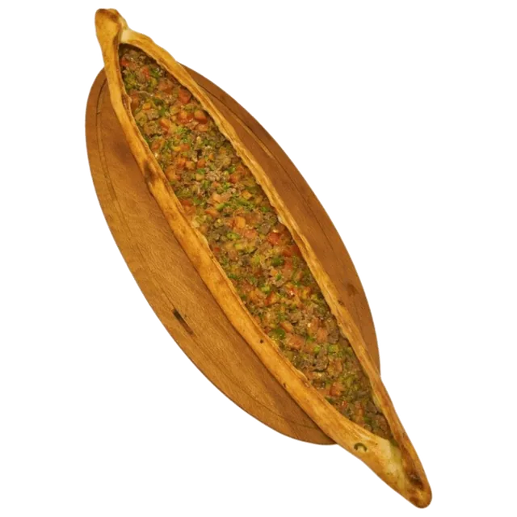
475 TL
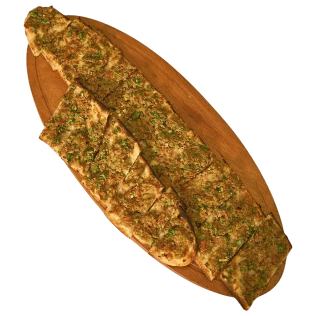
510 TL
Kıyma, domates, biber
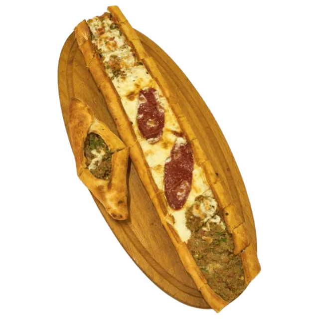
450 TL
Kıyma, kuşbaşı, sucuk, kaşar peyniri
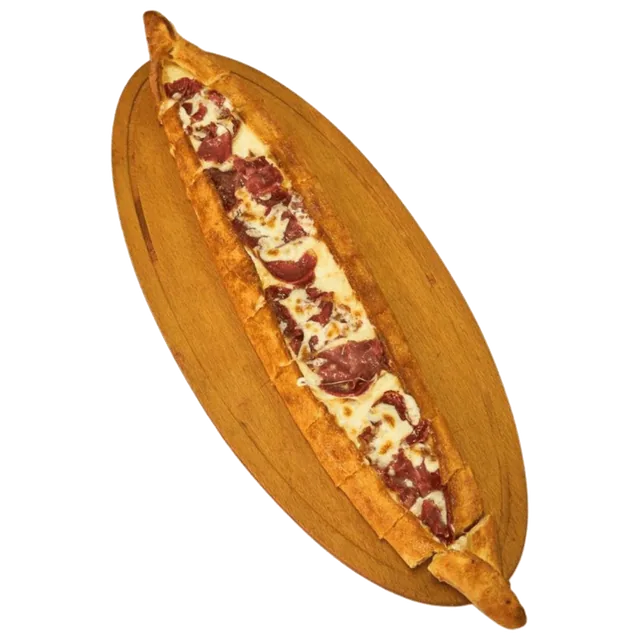
500 TL
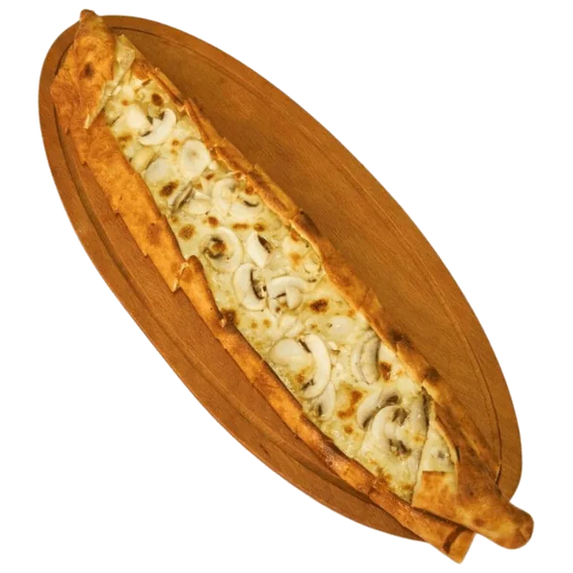
410 TL
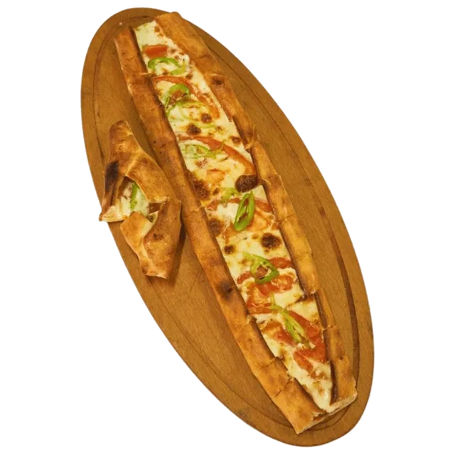
400 TL
Kaşar peyniri, domates, yeşil biber, kırmızı biber, mantar
İstanbul'un kalbinde, Ortaköy'de: geleneksel odun ateşinde pişen pide ve lahmacun.
Menümüzde pek çok çeşit pide, lahmacun, salata ve çorba var. Ürünlerimizi her gün, mevsimine göre hazırlıyoruz.
Kavurmalı, beyaz peynirli, üç peynirli ve ıspanaklı pideden cevizli lahmacuna kadar; vejetaryen ve vegan seçeneklerimizle herkese uygun bir lezzet sunuyoruz.
Elise Pide ve Lahmacun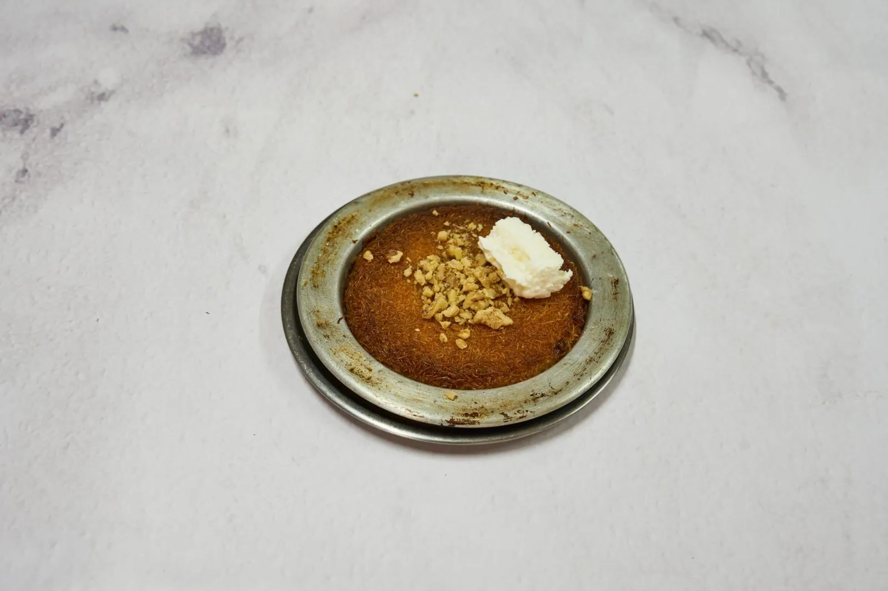
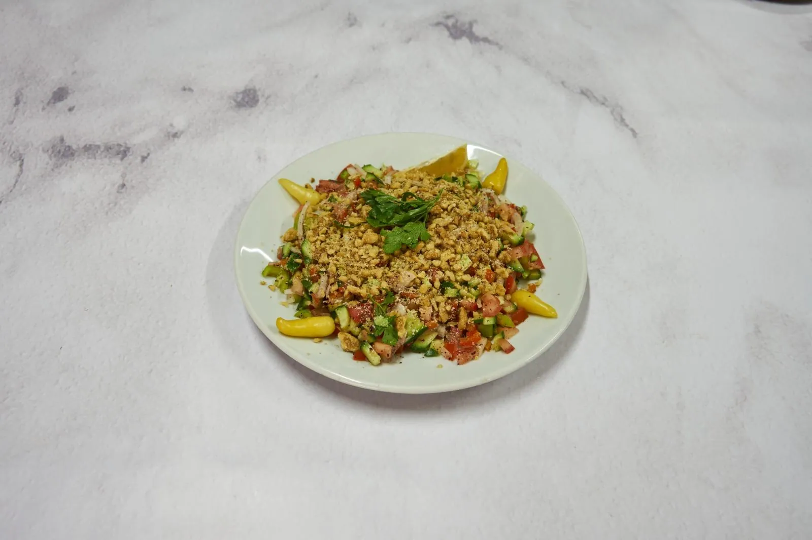
Siparişinizi online ya da telefonla verin; pide ve lahmacun ortalama 30 dakikada kapınızda.
| Pazartesi | 10:30–23:30 |
|---|---|
| Salı | 10:30–23:30 |
| Çarşamba | 10:30–23:30 |
| Perşembe | 10:30–23:30 |
| Cuma | 10:30–23:30 |
| Cumartesi | 10:30–23:30 |
| Pazar | 10:30–23:30 |
Her ayın 1'inde ve 15'inde kapalıyız.
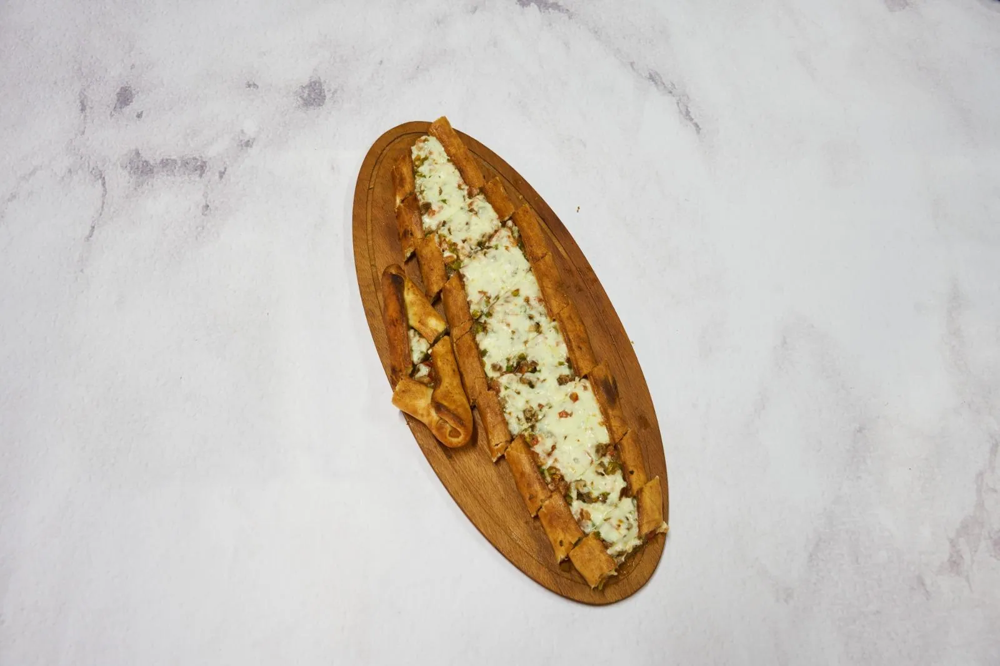